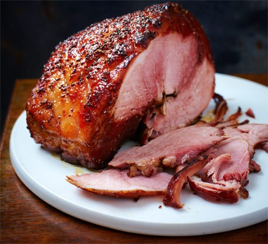

Cola Ham Recipe

Description
This slow cooked ham is an incredibly simple recipe. Despite this it is exceptionally delicious and is sure to please the whole family at christmas time.
The cola gives the ham a delightfully sweet taste. Add the glaze at the end and youll have yourself a delicious ham worthy of a five start restaurant!
Ingredients
- Smoked Gammon Joint(~2kg)
- 2 litres of cola(not diet)
- 1 carrot(chopped)
- 1 onion(peeled and quartered)
- 1 stick celery(chopped)
- 1 cinnamon stick
- 1/2 tbsp peppercorns
- 1 bay leaf
Glaze
- 150ml maple syrup
- 2 tbsp wholegrain mustard
- 2 tbsp red wine vinegar
- pinch of ground cloves or five-spice
Instructions
- Put 2kg unsmoked boneless gammon joint in a large pan and cover with 2l cola. Add 1 chopped carrot, 1 quartered onion, 1 chopped celery stick, 1 cinnamon stick, ½ tbsp peppercorns and 1 bay leaf.
- Bring to the boil, then turn down to simmer for around 2 ½ hrs, topping up with boiling water if necessary to keep the gammon fully covered.
- Carefully pour the liquid away, then let the ham cool a little while you heat the oven to 190C/170C fan/gas 5.
- Lift the ham into a roasting tin, then cut away the skin leaving behind an even layer of fat. Score the fat all over in a criss-cross pattern.
- Mix 150ml maple syrup, 2 tbsp wholegrain mustard, 2 tbsp red wine vinegar and a pinch of ground cloves or five-spice in a jug.
- Pour half over the fat, roast for 15 mins, then pour over the rest and return to the oven for another 30 mins, baste half way through.
-
Remove from the oven and allow to rest for 10 mins, then spoon more glaze over the top. Can be roasted on the day or up to 2 days ahead and served cold.